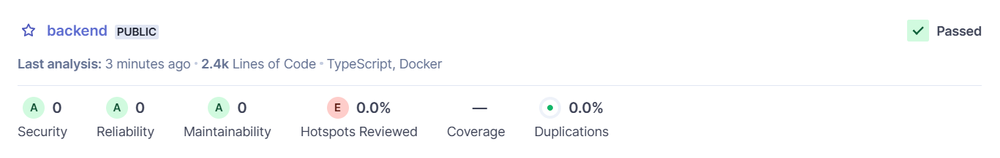

ComptaCompanion est une plateforme de chat en ligne qui permet d'accéder à des informations et des conseils sur la comptabilité et la finance de manière facile et rapide.
Plus d'infos et de détailles sur le cahier des charges: esp_docs/cahier_des_charges.
Une version production du backend est accessible ici: backend.
La documentations des différentes routes est disponnible ici: backend/docs.
Les routes sont regroupées par tag. Les routes d'administration ont un tag qui commence par admins- et les routes utilisateur par users-.
Chaque route est documentée de la sorte :
Test Request pour tester la route en directbun install pour installer les dépendancesbun run dev pour lancer le projet docker build -t esp_back .
docker run -p 3000:3000 --env-file .env esp_back
├── src : dossier principal contenant les pages et les composants
│ ├── test : routes debug pour faciliter les tests sur dev
│ ├── middlewares : middlewares liés à l'authentification
│ ├── admins : routes admins
│ │ ├── collections : gestion des collections globale de la plateforme
| | ├── documents : gestion des documents des collections globales
│ │ ├── config : configuration de la plateforme (prix, prompts)
│ │ ├── forum : gestion et administration du forum
│ │ ├── profile : administration des profiles utilisateurs (credits, niveau de connaissance)
│ │ ├── questions : configuration des question predefinies de la plateforme
│ │ ├── self : gestion des admins
| | └── users : lister les users
│ └── users : routes utilisateurs
│ ├── chat : envoie de messages à l'assistant
│ ├── collections : gestion des collections
| ├── documents : gestion des documents des collections
│ ├── conversations : gestion des conversations
│ ├── forum : interaction avec le forum
│ ├── profile : gestion du profil utilisateur
│ ├── questions : récupération des questions prédéfinies selon le niveau de connaissance
| └── reports : génération et gestion des rapports de l'assistant
└── sonar : documentation pour SonarQube (installation, scan)
Les fichiers .test.ts contiennt les tests unitaires, les fichiers _def.ts contiennent les définition des routes. Les autres fichiers contiennent les fonctions utilisées par les routes.

bun install installe toutes les dependancesbun run dev lance le serveur de développementbun run build build le projet pour la productionbun run format ./ ./src/ formatte le code des fichiersbun run deploy-dev déployer le projet dans l'environnement de développement fly.iobun run deploy-prod déployer le projet dans l'environnement de production fly.iobun --env-file=.env ... exécute la commande bun en utilisant un fichier d'environnement spécifique